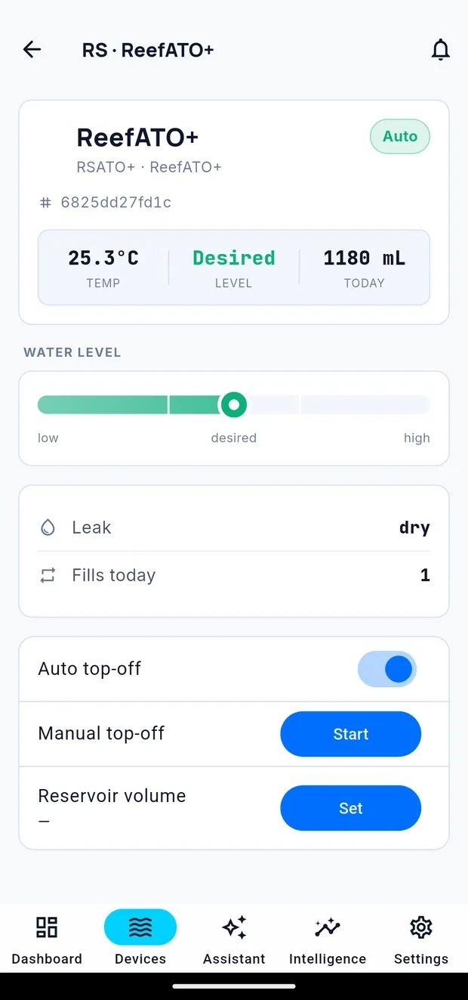

Controlling your equipment
Connected equipment has its own page in Cora, showing live state and offering whatever controls that device supports. Open one from the Devices tab.

Every device page follows the same shape: identification at the top, a row of live readings, any state the device reports, then its controls. The bell in the title bar sets alert thresholds for that device — see Consumables.
What happens when you send a command
A command does not always succeed, and Cora tells you which of four things happened rather than assuming:
| Outcome | Means |
|---|---|
| Confirmed | The equipment acknowledged the change and reported its new state |
| Unconfirmed | The command was sent, but nothing reported back. This means "we do not know", not "it worked" — check the device's own state |
| Refused | Something declined it — a safety rule, a lock, or the equipment itself |
| No change | The equipment was already in the state you asked for |
Every outcome is recorded in Activity with what caused it.
Neptune Apex
The Apex page lists your probes and outlets.
- Probes report into Cora as sources and can be placed on a dashboard.
- Outlets switch between Auto, Off and On. Auto returns control to your Apex programming.
- Fitted modules — Trident, DŌS and others — each have their own page.
Trident
Shows the current test state, the remaining reagent and waste-water levels, and lets you start a test.
You can set an alert threshold for remaining tests from this page, so Cora warns you before reagent runs out. See Consumables.
DŌS
Each dosing head shows what it is dosing, its schedule, and how much is left in the container.
Red Sea ReefBeat
Each unit has a page appropriate to what it is: a dosing unit shows its heads and containers, an ATO shows its reservoir, a mat roller shows remaining days, a wave pump shows its current mode.
Controls available depend on the unit.
Jecod pumps
The pump page shows its current mode and intensity, and lets you change both.
You can also:
- Group pumps, so a change applies to several at once
- Copy a schedule from one pump to another
- Apply a program to a pump
Maxspect
The gyre page shows the current mode and intensity for each head, and when the unit last reported.
What happens after you change something
Every change is recorded in Activity with the surface that requested it. If a device does not accept a change, the failure is recorded there too.
Written for Cora Max 0.28.32 and Cora Mobile 0.5.53.
Still stuck? Email cora@coraiq.tech and we'll help.